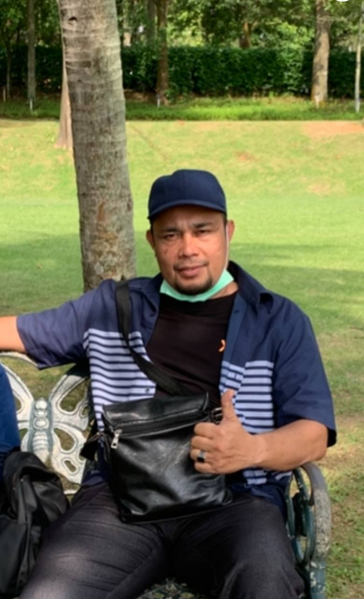
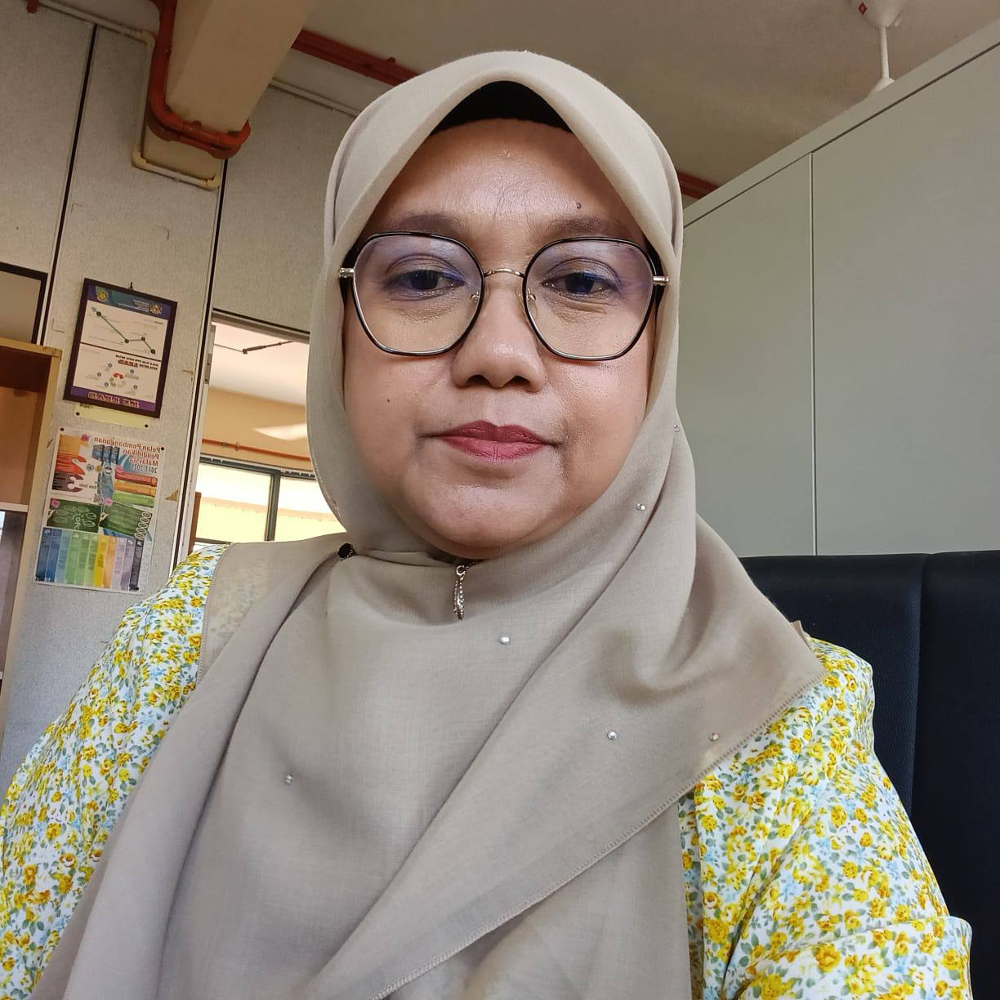
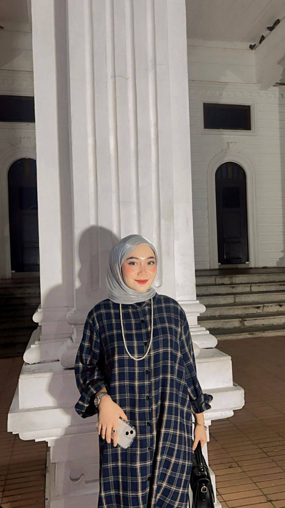
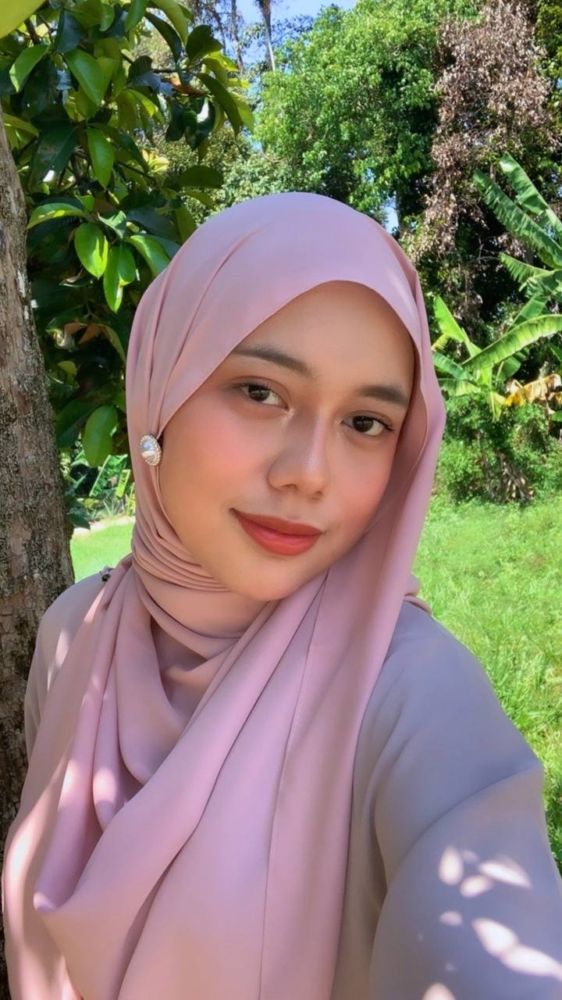
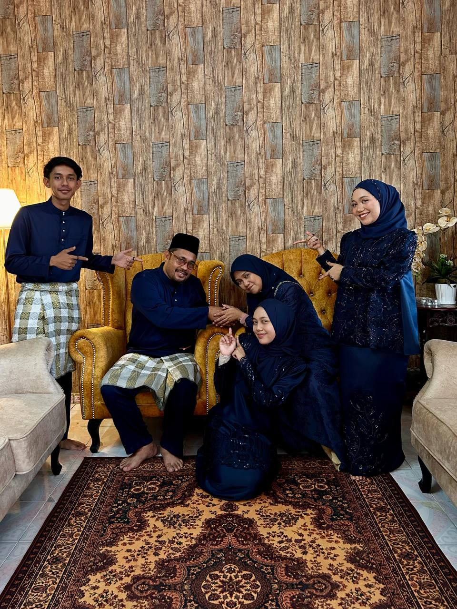
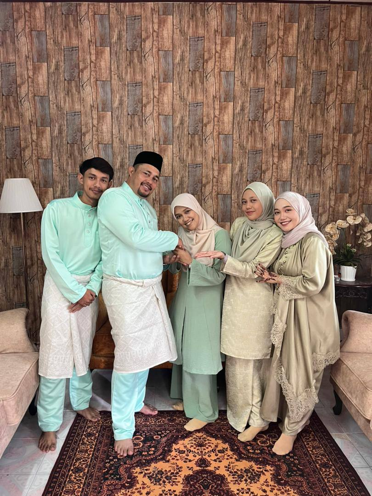
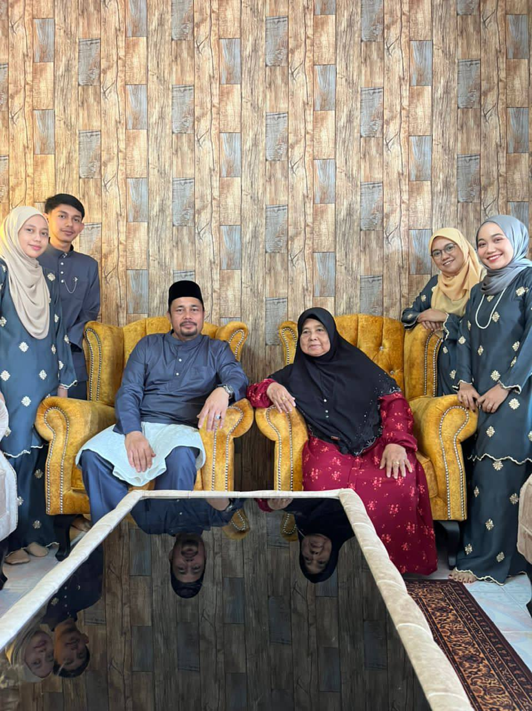
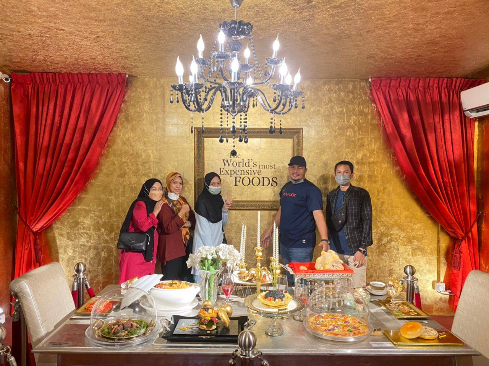
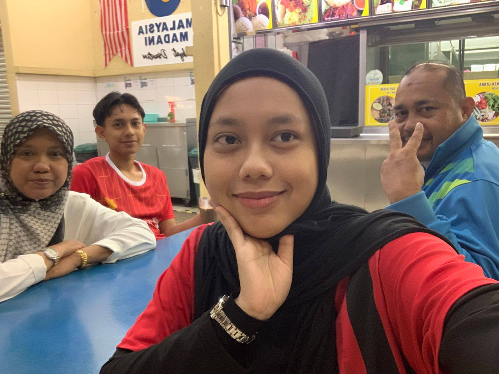
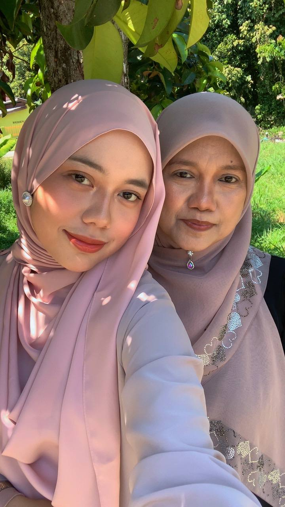

Developed for IML 254 – Introduction to Web Content Development
Universiti Teknologi MARA (UiTM) Kedah Campus
Nur Farah Izni Binti Kharuazman
© 2026 All Rights Reserved | Personal Website Project
Last Updated: April 1, 2026
My family is everything to me. They are not just the people I live with, but the ones who shape who I am every single day. They are my greatest source of strength, comfort, and motivation in life. Since I was young, they have always been there to support me, guide me, and love me unconditionally without expecting anything in return.
There were moments when life felt overwhelming, when I felt tired, lost, and unsure about myself. However, my family never gave up on me. They reminded me to stay strong, to keep moving forward, and to believe in myself even when I struggled to do so.
Even though we are all growing and becoming busier, I truly miss the simple moments we shared together. Those memories will always stay in my heart forever.
No matter where life takes me, my family will always be my home and my greatest strength.

My Dad
Name: Encik Kharuazman Bin Abdullah
Age: 46
Occupation: Senior Assistant Engineer
Fun facts: Strict but loving.

My Mother
Name: Puan Rossilawati Binti Awang Kechik
Age: 44
Occupation: Administrative Assistant
Fun facts: Patient and hardworking.

My Sister
Name: Nur Fatin Ilyana
Age: 26
Occupation: Housewife
Fun facts: Protective and caring.
My Brother
Name: Muhammad Fariz Irfan
Age: 22
Student: Bachelor's Degree in Engineering
Fun facts: Humble and intelligent.

Me
Name: Nur Farah Izni
Age: 20
Student: Diploma in Library Informatics
Fun facts: Cheerful but strong.






Developed for IML 254 – Introduction to Web Content Development
Universiti Teknologi MARA (UiTM) Kedah Campus
Nur Farah Izni Binti Kharuazman
© 2026 All Rights Reserved | Personal Website Project
Last Updated: April 1, 2026